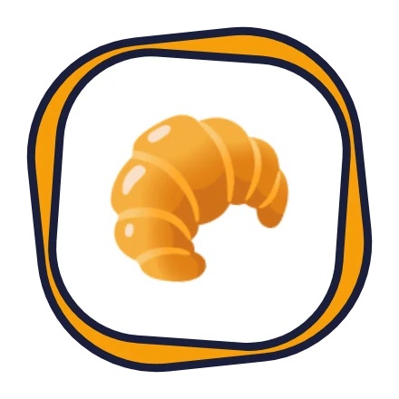

크루아상
겹겹이 섬세한 감성의 소유자
이 유형이 나온 정도
-
낮게 나왔다면 여러 빵의 성격을 조금씩 가진 사람이에요
당신은 결이 고운 사람이에요. 남들이 지나치는 작은 차이를 알아채고, 말 한마디에도 여러 겹의 뜻을 읽죠. 그 섬세함 덕분에 글, 선물, 배려에 정성이 묻어나요. 다만 그만큼 잘 부서져서, 무심코 들은 말을 며칠씩 곱씹기도 해요.
이런 특징이 있어요
- 분위기와 표정 변화를 금방 알아챔
- 취향이 뚜렷하고 디테일에 강함
- 상처받아도 그 자리에서는 티를 안 냄
📖 이 결과에 대해 조금 더
예민한 게 아니라 섬세한 거예요
크루아상의 맛은 수십 겹의 결에서 나와요. 당신의 감각도 마찬가지예요. 남보다 많이 느끼는 건 피곤한 일이지만, 그 덕분에 남이 못 보는 걸 보고 못 만드는 걸 만들어요.
이 빵에게 필요한 한 가지
마음에 걸리는 말을 들었을 때 "그 말은 무슨 뜻이었어?" 하고 한 번 물어보세요. 혼자 해석하며 보낸 사흘이 한마디로 풀릴 때가 많아요.
같은 접시에 놓으면 좋은 빵은?
⚠️ 이 테스트는 재미로 즐기는 콘텐츠이며 전문적인 심리 진단이 아니에요.